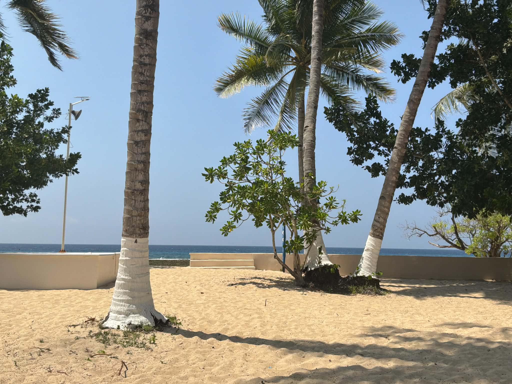
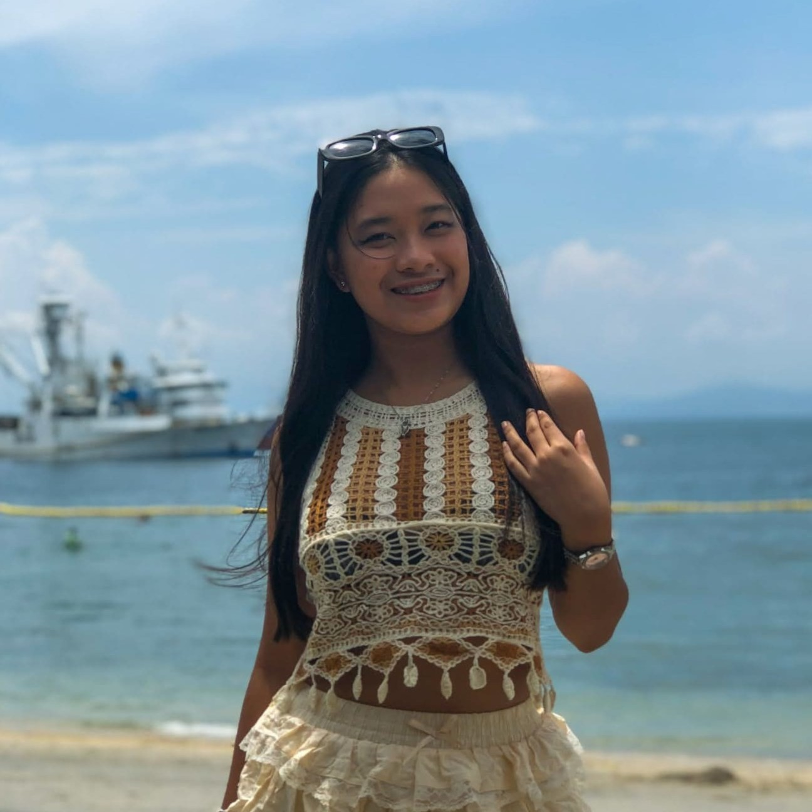

I am an Information Technology student dedicated in modern web development and digital designing.
Driven by commitment to technical excellence, I design and construct responsive, scalable, and user-centric web applications.
My academic foundation, combined with software development experience, enables me to effectively bridge user interface design with robust back-end architecture.
I am dedicated to applying industry standards, optimizing user experiences, and continuously expanding my technical capabilities to deliver high-impact digital products.